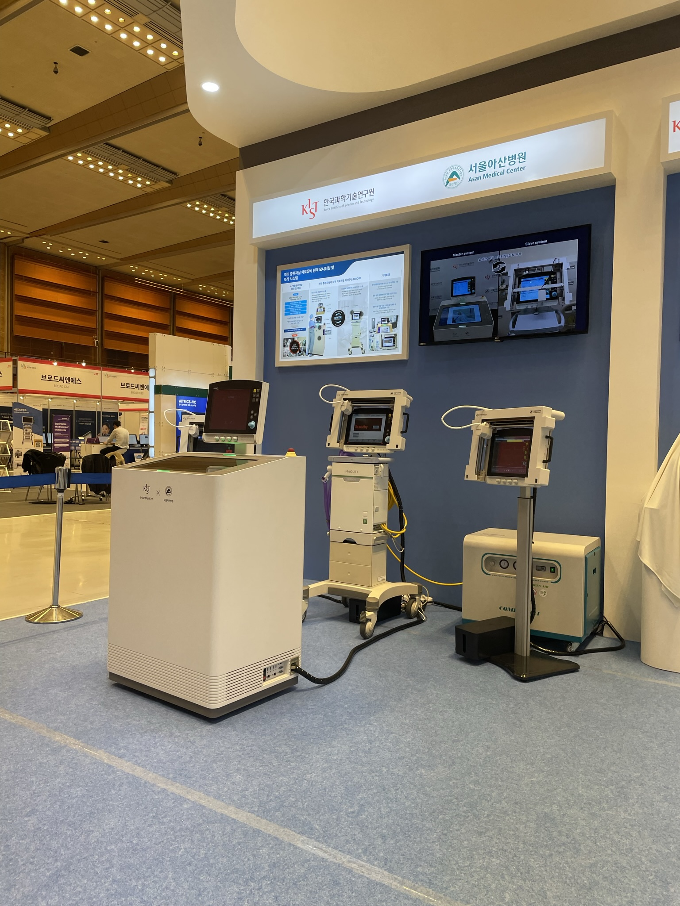
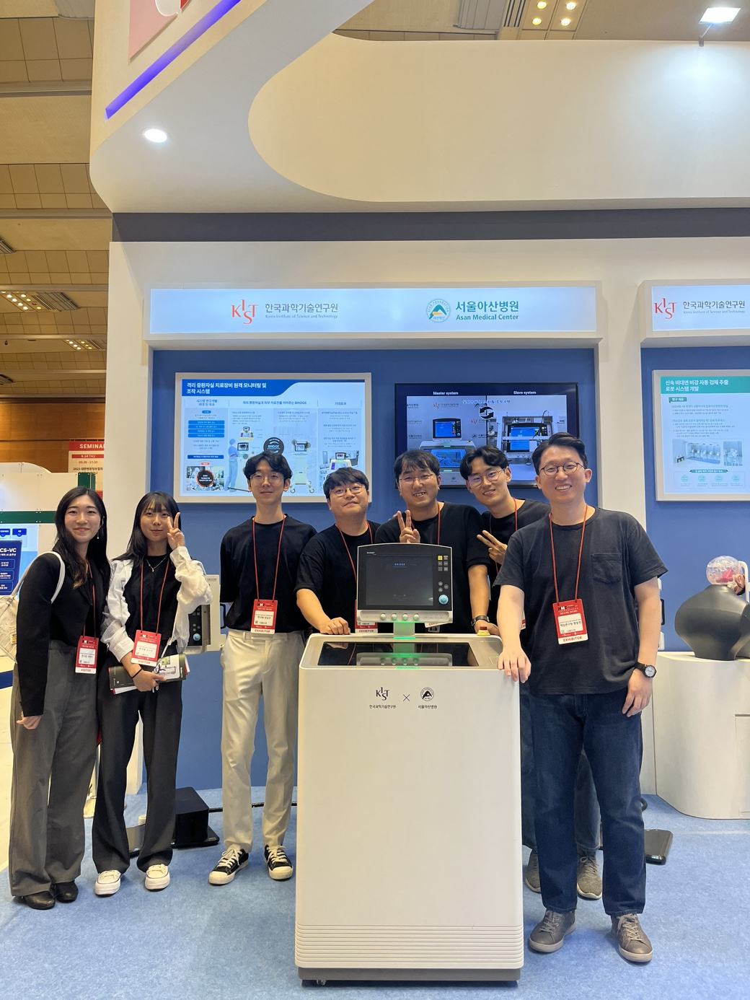
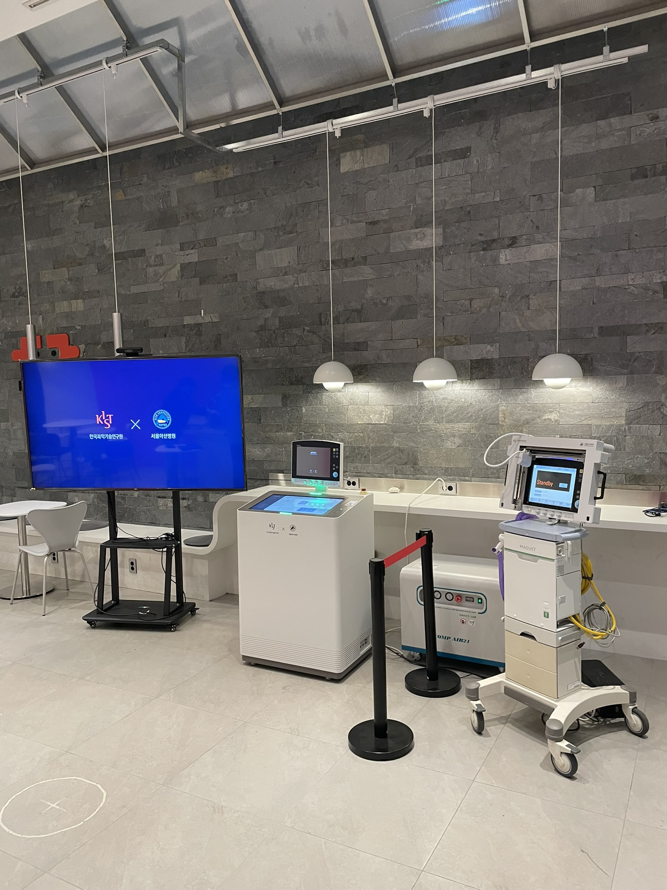

Project Overview
- Developed an integrated tele-monitoring/operation system for therapeutic devices in ICU environments
- Designed for intuitive user interfaces and precise tele-operated device controls
- Achieved successful demonstrations, including a showcase at a national exhibition
Introduction and Problem Definition
- Medical staff require remote monitoring and operation of therapeutic devices in isolation ICUs
- Challenges include ensuring field applicability, intuitive usability, and manipulation of diverse device interfaces
- Existing systems often fail to provide precise control and versatile adaptability
Solution
- Developed a Central Controller System (CCS) for user-friendly monitoring and control
- Engineered a Tele-Controlled System (TCS) featuring a precision XY-positioner with a maximum error of 0.695 mm
- Integrated an end-effector capable of pressing, gripping, and rotating, ensuring compatibility with touchscreens, buttons, and knobs
Results
- Completed tele-monitoring/operation tasks within 1 minute from system login
- Demonstrated field applicability during focus group evaluations
- Showcased the system's potential for practical use in medical environments
My Contribution
- Developed system interfacing using Python and C/C++
- Configured environments for master and slave devices
- Designed and implemented GUI for seamless user interaction
- Created communication protocols and integrated system architecture
- Conducted system demonstrations, including presentations at national exhibitions
Project Media
Korean News Clip - Demo Video(Cut)
Promotion Video of Exhibition(cut)
Project Gallery


